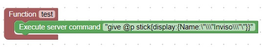
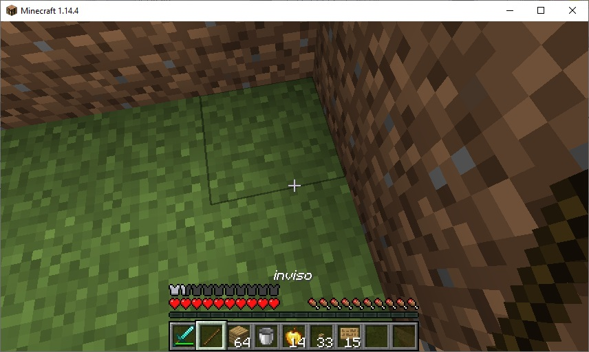
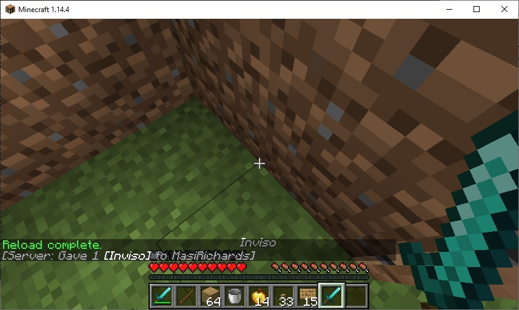

Give Server Command
The /give server command can be used to give a player an item with a custom name
This code will give the player a stick with the custom name: Inviso

Use your imagination to create a new name. Change the word Inviso to the your name.
Press the download button and replace test.js. Then, inside minecraft type the commands: /reload, /js test()
The stick should appear in your inventory:

Now change the word
stick
to
diamond_sword
Download test.js, reload, and run /js test()
A diamond sword with a custom name should appear in your inventory:
